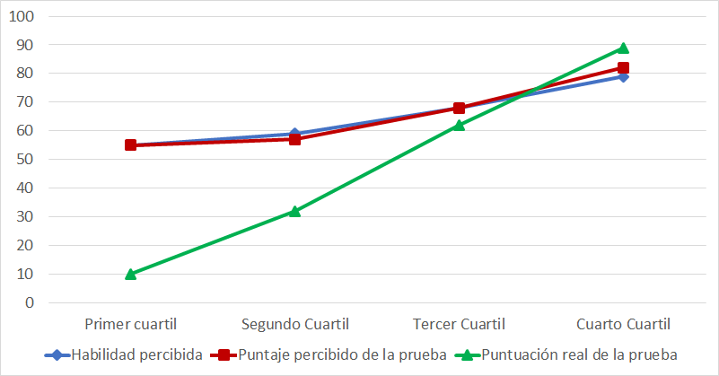

10 En el salón de clase
Estás leyendo la segunda edición en progreso y en castellano de Enseñar Tecnología en Comunidad (Teaching Tech Together). Este capítulo está siendo objeto de una profunda reestructuración y puede resultar confuso o incompleto
El capítulo anterior describió cómo practicar la enseñanza de una lección y describió un método—programación en vivo—que permite a las/los docentes adaptarse al ritmo y los intereses de sus estudiantes. Este capítulo describe otras prácticas que también son útiles en clases de programación.
Antes de describirlas, vale la pena detenerse un momento para establecer expectativas. El mejor método de enseñanza que conocemos es la tutoría individual: Bloom (1984) descubrió que el desempeño de las/los estudiantes a quienes se les enseñó uno a uno fue dos desviaciones estándar mejor que el de quienes aprendieron mediante una clase convencional. Es decir, que las/los estudiantes con tutoría individual superaron al 98% de estudiantes a quienes se les dio clases magistrales convencionales. Sin embargo, si bien la tutoría y la enseñanza a aprendices han sido históricamente las formas más comunes de transmitir conocimientos, hoy son excepciones debido a la industrialización de la educación formal. A pesar de la explosión en torno a la inteligencia artificial, la solución no estará allí a corto plazo: por eso, cada método que se describe a continuación es esencialmente un intento de abordar la efectividad de la tutoría individual a escala.
10.1 Hacer cumplir el Código de Conducta
Lo más importante que he aprendido sobre enseñar en los últimos 30 años es la importancia de tratar a las demás personas con respeto, tanto dentro como fuera de la clase. Si usas este material de alguna manera, por favor adopta un Código de Conducta como el del Chapter 20 y exige a toda persona que participe en tus clases que lo respete. No puedes evitar que las personas sean ofensivas, de la misma manera que las leyes contra el robo no evitan que las personas roben, pero puedes dejar claras las expectativas y las consecuencias, y señalar que estás tratando de que tu clase sea un lugar seguro y amigable para todas/os.
Un Código de Conducta sólo es útil si se hace cumplir. Si crees que alguien ha violado el tuyo, puedes advertirle, pedirle que se disculpe, y/o expulsarla/o, dependiendo de la gravedad de la infracción y de si crees que fue intencional o no. Hagas lo que hagas:
- Hazlo frente a testigos.
-
La mayoría de las personas bajarán el tono de su lenguaje y hostilidad en público, tener presente a alguien más asegura que la discusión posterior no degenere en afirmaciones contradictorias sobre quién dijo qué.
- Si expulsas a alguien, comunícalo al resto de la clase y explica por qué.
-
Esto ayuda a evitar que los rumores se difundan y muestra que tu Código de Conducta realmente significa algo.
- Envía un correo electrónico a la persona infractora tan pronto como puedas
-
para resumir lo que sucedió y los pasos que tomaste, y copia el mensaje a las/los anfitrionas/es del taller o a alguna/o de tus colegas docentes para que haya un registro contemporáneo de la conversación. Si la persona infractora responde, no participes en un debate largo: nunca es productivo.
Lo que sucede fuera de la clase importa al menos tanto como lo que sucede dentro de ella Partanen (2011), por lo que debes proporcionar una forma para que tus estudiantes puedan informar sobre los problemas que tú no puedes ver. Un paso es pedirle a alguien fuera de tu grupo que sea el primer punto de contacto; de esta manera, si alguien quiere presentar una queja sobre ti o alguno de tus colegas educadores, tiene cierta garantía de confidencialidad y acción independiente. Aurora and Gardiner (2019) tiene muchos otros consejos y es a la vez breve y práctico.
10.2 Instrucción por pares
Sin importar qué tan buena sea una persona enseñando, solo puede explicar una cosa a la vez. Entonces, ¿cómo puede aclarar muchos conceptos erróneos diferentes en un tiempo razonable? La mejor solución desarrollada hasta ahora es una técnica llamada instrucción por pares. Originalmente creada por Eric Mazur en Harvard Mazur (1996), se ha estudiado extensamente en una amplia variedad de contextos, incluida la programación Crouch and Mazur (2001),Porter et al. (2013), y Porter et al. (2016) descubrieron que las/los estudiantes valoran la instrucción de sus pares incluso en el primer contacto.
La instrucción por pares intenta proporcionar instrucción individualizada de manera escalable intercalando la evaluación formativa con la discusión entre estudiantes:
Haz una breve introducción al tema.
Ofrece a tus estudiantes una pregunta de opción múltiple que investigue sus conceptos erróneos. (en lugar de evaluar el simple conocimiento de hechos).
Haz que el conjunto de tus estudiantes responda la pregunta de opción múltiple.
Si todas/os tus estudiantes tienen la respuesta correcta, continúa.
Si todas/os tienen la misma respuesta incorrecta, aborda ese error específico.
Si tienen una combinación de respuestas correctas e incorrectas, dales varios minutos para discutir entre ellas/os en grupos de 2 a 4, luego que vuelvan a votar.
Como muestra [este video][video-concept-test], la discusión en grupo mejora significativamente la comprensión de las/los estudiantes porque descubre lagunas en sus razonamientos y obliga a que aclaren sus pensamientos. Entonces, volver a sondear a la clase permite que la/el docente averigüe si puede continuar o si se necesitan más explicaciones. Después de presentar la respuesta correcta, una ronda de explicación adicional le da a las/los estudiantes una oportunidad más para solidificar su comprensión.
Pero, ¿podría ser esto un falso positivo? ¿Los resultados están mejorando debido a una mayor comprensión durante la discusión o simplemente por un efecto de seguimiento de quien lidera el grupo (“vota como Andrea, ella siempre tiene la razón”)? Smith et al. (2009) evaluaron esta cuestión: luego de la primera pregunta, hicieron una segunda pregunta que las/los estudiantes respondieron individualmente. Descubrieron que la discusión entre pares mejora la comprensión, incluso cuando ninguna de las personas en un grupo de discusión sabía originalmente la respuesta correcta. Siempre que exista diversidad de opiniones dentro del grupo, sus conceptos erróneos se anulan.
10.2.1 Tomar posición
Es importante que tus estudiantes voten públicamente para que no puedan cambiar de opinión después y racionalizarlo con excusas como: “Acabo de interpretar mal la pregunta.” Gran parte del valor de la instrucción por pares proviene de la hipercorrección: obtener la respuesta incorrecta y tener que pensar en las razones del porqué de esta respuesta (Section 6.1).
10.3 Enseñar en comunidad
Co-enseñar describe cualquier situación en la que dos docentes trabajan juntas/os en la misma clase. Friend and Cook (2016) describen muchas formas de hacer esto, ejemplificadas con docentes A y B:
- Enseñar en equipo:
-
Ambas/os docentes entregan un único flujo de contenido en conjunto, turnándose como dos músicas/os haciendo solos.
- Enseñar y ayudar:
-
La/el docente A enseña mientras B se mueve por el aula para ayudar a estudiantes con dificultades.
- Enseñanza alternativa:
-
La/el docente A proporciona a un pequeño grupo de estudiantes una instrucción más intensiva o especializada mientras B ofrece una lección general al grupo principal.
- Enseñar y observar:
-
La/el docente A enseña mientras B observa a los estudiantes y recopila datos sobre su comprensión para ayudar a planificar las futuras lecciones.
- Enseñanza paralela:
-
La clase se divide en dos. Las/los docentes presentan el mismo material simultáneamente a cada grupo.
- Enseñanza por estaciones:
-
Las/los estudiantes se dividen en pequeños grupos que rotan de una estación o actividad a la siguiente, mientras las/los docentes supervisan donde sea necesario.
Todos estos modelos crean más oportunidades para la transferencia involuntaria de conocimiento que la enseñanza por sí sola. Enseñar en equipo es particularmente beneficioso en talleres de un día: cada docente tendrá la oportunidad de descansar su voz y se reduce el riesgo de que al final del día el agotamiento sea tan grande que comience a hablar bruscamente con sus estudiantes o a manipularles el teclado.
10.3.1 Ayudar
Muchas personas que no se sienten cómodas enseñando están dispuestas y son capaces de brindar asistencia técnica en clase. Pueden ayudar a las/los estudiantes con la configuración e instalación de programas, responder preguntas técnicas durante los ejercicios, supervisar la sala para detectar personas que puedan necesitar ayuda o poner atención a las notas compartidas (Section 10.7), y responder preguntas o recordar que la/el docente lo haga durante los descansos.
Las/los ayudantes a veces son personas que se están capacitando para convertirse en docentes (es decir, son la/el docente B en el modelo de enseñar y apoyar), pero también pueden ser parte del personal de apoyo técnico de la institución anfitriona, ex estudiantes de la clase o estudiantes avanzadas/os que ya conocen bien el material. Usar a estas/os últimas/os como ayudantes es doblemente efectivo: no solo es más probable que comprendan los problemas que tienen sus pares, sino que también evita que se aburran. El aburrimiento es contagioso, así que evitarlo ayuda a que toda la clase se mantenga comprometida: si un puñado de personas comienzan a dispersarse, las personas que las rodean seguirán su ejemplo.
Si estás co-enseñando con una/un colega:
Toma de dos a tres minutos antes del comienzo de cada clase para confirmar quién está enseñando qué. Si tienen tiempo, intenten dibujar o revisar en conjunto un mapa conceptual.
Usa ese tiempo para acordar también un par de señales de manos. “Vas demasiado rápido”, “habla”, “ese estudiante necesita ayuda” y “es hora de ir al baño” son todas útiles.
Cada persona debe enseñar durante al menos 10 a 15 minutos seguidos, ya que los estudiantes se distraen con cambios más frecuentes.
La persona que no está enseñando no debe interrumpir, ofrecer correcciones o elaboraciones, o hacer cualquier otra cosa que distraiga de lo que está haciendo o diciendo la persona que enseña. La única excepción es hacer preguntas guía si las/los estudiantes parecen pasivas/os o inseguras/os de sí mismas/os.
Cada persona debería tomarse un par de minutos antes de empezar la clase para ver lo que su co-docente va a enseñar después de su turno y entonces no presentar nada de ese material.
La persona que no está enseñando debe mantenerse comprometida con la clase, no debe hacer otra cosa, como ponerse al día con su correo electrónico. Supervisar las notas compartidas (Section 10.7), vigilar a las/los estudiantes para ver quién tiene dificultades, anotar algunos comentarios para dárselos a su co-docente en el próximo receso—cualquier cosa que contribuya a la lección es mejor que cualquier cosa que no lo haga.
Lo más importante es que, cuando termine la clase, quienes co-enseñan tomen unos minutos para felicitarse o compadecerse: tanto en la enseñanza como en la vida, la pena compartida disminuye y la alegría compartida aumenta.
10.4 Evaluar conocimientos previos
Cuanto más sepas sobre tus estudiantes antes de comenzar a enseñar, más podrás ayudarles. Dentro de un sistema escolar formal, los pre-requisitos de tu curso te darán información sobre lo que probablemente ya sepan. Sin embargo, en un entorno free-range, tus estudiantes pueden ser mucho más diversas/os, por lo que es posible que quieras hacerles una breve encuesta o cuestionario antes de la clase para averiguar qué conocimientos y habilidades tienen.
Pedir a las personas que se califiquen a sí mismas en una escala del 1 al 5 no tiene sentido porque cuanto menos saben las personas sobre un tema, con menor precisión pueden estimar sus conocimientos (?fig-classroom-dunning-kruger, de [Neurologica][dunning-kruger-critique]), un fenómeno llamado efecto Dunning-Kruger Kruger and Dunning (1999). Por el contrario, las personas que integran grupos sub-representados a menudo subestiman sus habilidades.
{fig-classroom-dunning-kruger fig-alt = “el gráfico muestra una escala de 0 a 100 en el eje vertical y en el eje horizontal las etiquetas:”Primer cuartil”, “Segundo cuartil”, “Tercer cuartil” y “Cuarto cuartil”, en ese orden. Hay tres series graficadas, la correspondiente a la “habilidad percibida” en el primer cuartil toma valores entre 50 y 60 que son muy similares a los presentes en el segundo cuartil. El tercer cuartil presenta valores por encima de 60 y el cuarto cuartil valores cercanos a 80. La serie “puntaje recibido en la prueba”, copia de forma casi idéntica la serie “habilidad percibida”. La serie “puntuación real de la prueba” toma valores cercanos a 10 en el primer cuartil, valores cercanos a 30 en el segundo cuartil, cercanos a 60 en el tercer cuartil y entre 80 y 90 para el cuarto cuartil.” }
En lugar de pedirles a las personas que se autoevalúen, puedes preguntarles con qué facilidad podrían completar algunas tareas específicas. Sin embargo, hacer esto es arriesgado: la escuela entrena a las personas para que traten cualquier cosa que parezca un examen como algo que tienen que aprobar, en lugar de tomarlo como una oportunidad para dar forma a la instrucción. Si alguien responde “No sé” incluso a un par de preguntas en su pre-evaluación, podría concluir que tu clase es demasiado avanzada para su nivel. Por lo tanto, es posible que asustes a muchas de las personas que más deseas ayudar.
La Section 24.6 presenta un breve cuestionario de pre-evaluación que la mayoría de tus potenciales estudiantes no va a encontrar intimidante. Si usas este formulario o una herramienta parecida, trata de hacer un seguimiento a las personas que no respondan para averiguar por qué no lo hicieron. Además, compara tu evaluación con la que las personas hicieron de sí mismas, de modo de mejorar tus preguntas en el futuro.
10.5 Planifica para habilidades mixtas
Si tus estudiantes tienen niveles muy diversos de conocimientos previos, puedes terminar fácilmente en una situación en la que un tercio de tu clase se pierde y un tercio se aburre. Eso es insatisfactorio para toda la clase, pero hay algunas estrategias que puedes utilizar para manejar la situación:
Antes de realizar un taller, comunica claramente su nivel a todas las personas mostrando algunos ejemplos de ejercicios que se les pediría que completen. Esto ayuda a tus potenciales participantes a evaluar el nivel de la clase de manera mucho más efectiva que un listado de temas.
Proporciona ejercicios adicionales que tus estudiantes puedan hacer a su propio ritmo, para que quienes estén más avanzadas/os no terminen temprano y se aburran.
Pon atención a las/los estudiantes que se están quedando atrás y actúa temprano para que no se frustren ni se den por vencidas/os.
Pide a tus estudiantes más avanzadas/os que ayuden a las personas que están a su lado (mira la Section 10.6 debajo).
Otra forma en que puedes adaptarte si hay habilidades mixtas entre tus estudiantes es hacer que todas las personas trabajen en el material por su cuenta a su propio ritmo, como lo harían en un curso en línea pero simultáneamente, y contando con ayudantes que deambulan por la sala para despejar las dudas. Algunas personas llegarán tres o cuatro veces más lejos que otras cuando los talleres se realicen de esta manera, pero todas habrán tenido un día gratificante y desafiante.
10.5.1 Falsas/os principiantes
Una/Un falsa/o principiante{falso/a principiante} es alguien que ha estudiado un lenguaje previamente pero lo está aprendiendo de nuevo. Pueden ser indistinguibles de principiantes absolutas/os en las pruebas de pre-evaluación, pero avanzan mucho más rápido una vez que comienza la clase porque están volviendo a aprender en lugar de aprender por primera vez.
Ser una/un falsa/o principiante es a menudo una señal de privilegio de preparación Margolis et al. (2010). Las/los falsas/os principiantes son comunes en las clases de programación free-range. Por ejemplo, imaginemos una/un niña/o que pudo ir a un campamento de verano de robótica porque su familia tiene los recursos suficientes. Es posible que tenga un desempeño pobre en una pre-evaluación de conocimientos de programación porque el material no está fresco en su mente. Sin embargo, aún tiene una ventaja sobre una/un niña/o con un trasfondo menos afortunado. Las estrategias descriptas anteriormente pueden ayudar a nivelar el campo de juego en casos como este pero, nuevamente, la solución real es usar tu propio privilegio para abordar los factores externos a la clase que sean de mayor relevancia Partanen (2011).
Lo más importante es aceptar que no puedes ayudar a todo el curso todo el tiempo. Si reduces el ritmo para adaptarte a dos personas a quienes les está costando, estás fallando con las otras dieciocho personas. Del mismo modo, si dedicas unos minutos a hablar sobre un tema avanzado con una/un estudiante aburrida/o, el resto de la clase se sentirá excluida.
10.6 Programación en parejas
La programación en parejas es una práctica de desarrollo de software en la que [dos personas programan juntas en una computadora][video-pair-programming]. Una persona (quien conduce) escribe, mientras que la otra (quien navega) ofrece comentarios y sugerencias, y ambas cambian de función varias veces por hora.
La programación en parejas es una práctica eficaz en el trabajo profesional Hannay et al. (2009) y también es una buena forma de enseñar: los beneficios incluyen una mayor tasa de éxito en los cursos introductorios, un mejor software y una mayor confianza de las/los estudiantes en sus soluciones. También hay evidencia de que estudiantes de grupos sub-representados se benefician incluso más que otros McDowell et al. (2006),Hanks et al. (2011),Porter et al. (2013),Celepkolu and Boyer (2018). Los pares pueden ayudarse mutuamente durante los ejercicios prácticos, aclarar los conceptos erróneos de la otra persona cuando se presenta la solución y discutir intereses comunes durante los descansos. Lo he encontrado particularmente útil en los cursos con habilidades mixtas, ya que las parejas son más homogéneas que los individuos.
Cuando utilices la programación en parejas, coloca a todas las personas en parejas, no solo a las/los estudiantes que tienen dificultades, para que nadie se sienta señalada/o. También es útil que las personas se sienten en lugares nuevos frecuentemente (y, por lo tanto, trabajen con diferentes personas) y que las personas cambien de rol dentro de cada pareja tres o cuatro veces por hora para que la personalidad más fuerte de cada pareja no domine la sesión.
Si tus estudiantes usan la programación en parejas por primera vez, toma unos minutos para demostrar de qué se trata para que comprendan que no esperas que la persona que no tiene las manos en el teclado únicamente permanezca sentada y observe. Finalmente, diles que las personas que se enfocan en tratar de completar la tarea lo más rápido posible son menos justas al compartir Lewis and Shah (2015).
10.6.1 Cambio de parejas
Las/los docentes tienen opiniones encontradas sobre si se debería exigir a las personas que cambien de pareja a intervalos regulares. Por un lado, cambiar de parejas les da a todos la oportunidad de obtener nuevos conocimientos y hacer nuevas amistades. Por otro lado, trasladar las computadoras y los adaptadores de corriente a escritorios nuevos varias veces al día es desgastante y el cambio de parejas puede resultar incómodo para las personas más introvertidas. Dicho esto, Hannay et al. (2010) encontró una correlación débil entre los “cinco grandes” rasgos de personalidad y el rendimiento en la programación en parejas, aunque un estudio anterior Walle and Hannay (2009) encontró que las parejas cuyos integrantes tenían diferentes niveles de rasgos de personalidad se comunicaban con más frecuencia.
10.7 Tomar notas…¿juntas/os?
La toma de notas es una forma de elaboración en tiempo real (Section 6.1): te obliga a organizar y reflexionar sobre el material a medida que se presenta, lo que a su vez aumenta la probabilidad de que lo transfieras a la memoria a largo plazo. Muchos estudios han demostrado que tomar notas mientras se aprende mejora la retención Aiken, Thomas, and Shennum (1975),Bohay et al. (2011). Si bien aún no se ha estudiado ampliamente Orndorff III (2015),Yang and Lin (2015), he descubierto que hacer que tus estudiantes tomen notas juntos en una página en línea compartida también es eficaz:
Permite a las personas comparar lo que creen que ellas están escuchando con lo que están escuchando las otras personas, lo que les ayuda a llenar los vacíos y a corregir conceptos erróneos de inmediato.
Les da a las/los estudiantes más avanzadas/os de la clase algo útil que hacer. En lugar de aburrirse y revisar Instagram durante la clase, pueden tomar la iniciativa de registrar lo que se dice, lo que mantiene su compromiso a la vez que permite a las/los estudiantes menos avanzadas/os concentrarse más en el nuevo material.
Las notas que toman las/los estudiantes suelen ser más útiles para ellas/os que las que la/el docente prepararía de antemano. Es probable que los contenidos que les resultan nuevos a las/los estudiantes se vean bien reflejados en las notas compartidas, mientras que para la/el docente es más difícil predecir qué parte del material que enseñará será realmente nuevo.
Mirar notas recientes mientras las/los estudiantes están trabajando en un ejercicio ayuda al docente a descubrir si la clase se perdió o si algo se entendió mal.
10.7.1 ¿Es el lápiz más poderoso que el teclado?
Mueller and Oppenheimer (2014) informaron que tomar notas en una computadora es generalmente menos efectivo que tomar notas con lápiz y papel. Si bien su resultado fue ampliamente compartido, Morehead, Dunlosky, and Rawson (2019) no pudieron replicarlo.
Si tus estudiantes toman notas juntos, también puedes aprovechar para hacer evaluaciones formativas: que peguen fragmentos cortos de código o que respondan preguntas en forma de puntos o de oraciones. Siempre que quieras que cada persona responda una pregunta, haz una lista con el nombre de tus estudiantes y pégala en el documento, de modo de evitar que todas las personas intenten editar el mismo par de líneas al mismo tiempo.
Es frecuente que la primera vez que las/los estudiantes tomen notas compartidas sientan que se distraen, porque tienen que dividir su atención entre lo que dice la/el docente y lo que escriben sus pares (Section 5.1). Si estás trabajando por única vez con un grupo en particular, debes prestar atención a los consejos en la Section 10.12 y pedirles que tomen notas individualmente.
10.7.2 Puntos para mejorar
Una forma de demostrar a tus estudiantes que están aprendiendo contigo, no solo de ti, es permitirles que tomen notas editando (una copia de) tu lección. En lugar de publicar archivos PDF para que los descarguen, crea copias editables de tus diapositivas, notas y ejercicios en una wiki, un documento de Google o cualquier otra herramienta que te permita revisar y comentar los cambios. Darle crédito a las personas por corregir errores, aclarar explicaciones, agregar nuevos ejemplos y escribir nuevos ejercicios no reduce tu carga de trabajo, pero aumenta el compromiso y el tiempo de vida de la lección. (Section 7.3).
10.8 Notas adhesivas
Las notas adhesivas son una de mis herramientas de enseñanza favoritas, y no soy el único que ama su versatilidad, portabilidad, adherencia, capacidad de plegado y aroma sutil pero atractivo Ward (2015).
10.8.1 Como indicadores de estado
Reparte a cada estudiante dos notas adhesivas de diferentes colores, como, por ejemplo, naranja y verde. Las notas adhesivas se pueden sostener para votar, pero su uso real es como indicadores de estado. Si alguien ha completado un ejercicio y quiere que lo revisen, coloca la nota adhesiva verde en su laptop; si tiene un problema y necesita ayuda, coloca la nota naranja. Esto funciona mucho mejor que pedirle a la gente que levante la mano: es más discreto (lo que significa que es más probable que lo hagan), pueden seguir trabajando mientras su bandera está levantada en lugar de intentar escribir con una sola mano, y puedes ver rápidamente desde el frente del salón en qué estado se encuentra tu clase. Los indicadores de estado son particularmente útiles en clases donde las personas con habilidades mixtas están trabajando en el material a su propio ritmo (Section 10.5).
Una vez que tus estudiantes se sientan cómodos con dos notas adhesivas, puedes darles una tercera que puedan usar cuando tengan el cerebro lleno o necesiten un descanso para ir al baño Una colega me dijo una vez que la unidad básica de enseñanza es la vejiga. Cuando le contesté que yo nunca había pensado en eso, dijo: “Obviamente nunca has estado embarazado”. Nuevamente, es más probable que los adultos muestren una nota adhesiva a que levanten la mano y una vez que una nota color azul es levantada, generalmente le sigue una ráfaga de otras notas azules.
10.8.2 Para distribuir atención
También se pueden usar notas adhesivas para garantizar que tu atención como docente se distribuya de manera justa. Haz que cada estudiante escriba su nombre en una nota adhesiva y que lo coloque en su computadora portátil. Cada vez que alguien responda una de sus preguntas o que tú la/lo llames, quita su nota adhesiva. Una vez que hayas retirado todas las notas adhesivas, tus estudiantes vuelven a colocarlas en sus computadoras.
Esta técnica hace que sea fácil para la/el docente ver con quién no ha hablado recientemente, lo que a su vez ayuda a evitar prejuicios inconscientes e interactuar preferentemente con sus estudiantes más extrovertidos. Sin una verificación como esta, es muy fácil crear un ciclo de retroalimentación en el que quienes son más extrovertidas/os reciben más atención, por lo cual mejoran, lo que a su vez hace que reciban más atención, mientras que las/los estudiantes más introvertidas/os, menos seguras/os o marginadas/os se quedan detrás Alvidrez and Weinstein (1999),Jussim and Harber (2005).
También muestra a tus estudiantes que la atención se distribuye de manera justa, de modo que cuando se les llame, no se sentirán como si los estuvieran molestando. Cuando trabajo con un grupo nuevo, permito que las personas que prefieren no las llamen quiten sus propias notas adhesivas durante la primera o la segunda hora de clase. Si continúan haciendo esto a medida que pasa el tiempo, trato de tener una conversación tranquila para averiguar por qué y para ver si hay algo que pueda hacer para que se sientan más cómodas/os.
10.8.3 Como tarjetas de actas
También puedes usar notas adhesivas como tarjetas de actas. Antes de cada receso, tus estudiantes se toman un minuto para escribir en la nota adhesiva verde algo que creen que les será útil y en la nota naranja algo que consideran que se enseñó demasiado rápido o demasiado lento, que es confuso o irrelevante. Mientras disfrutan de su café o almuerzo, revisa sus notas y busca patrones. Se necesitan menos de cinco minutos para ver qué disfrutan las/los estudiantes de una clase de 40 personas, qué puntos hayan confusos, qué problemas tienen y qué preguntas aún no has respondido.
Las/Los estudiantes no deben firmar sus tarjetas de actas: están pensadas como comentarios anónimos. La técnica de uno arriba/uno abajo descrita en la Section 10.11 es una oportunidad para la retroalimentación colectiva.
10.9 Nunca una página en blanco
Los talleres de programación y otros tipos de clases se pueden construir en torno a un conjunto de ejercicios independientes, pueden desarrollar un único ejemplo extendido en etapas o utilizar una estrategia mixta. Las dos ventajas principales de los ejercicios independientes son que las personas que se retrasan pueden volver a sincronizarse fácilmente y que quienes desarrollan las lecciones pueden agregar, eliminar y reorganizar el material a voluntad (Section 7.3). Un único ejemplo extendido, por otro lado, mostrará a tus estudiantes cómo encajan las partes y piezas que están aprendiendo: en el lenguaje educativo, les brinda más oportunidades para integrar sus conocimientos.
Independientemente del enfoque que adoptes, las personas principiantes nunca deben comenzar a hacer ejercicios con una página o pantalla en blanco, ya que a menudo les resulta intimidante o desconcertante. Si te han seguido mientras realizas programación en vivo, pídeles que agreguen algunas líneas más o que modifiquen el ejemplo que creaste. Alternativamente, si están tomando notas compartidas, pega algunas líneas de código de inicio en el documento para que lo amplíen o modifiquen.
Modificar el código existente en lugar de escribir código nuevo desde cero no sólo proporciona a tus estudiantes una estructura: también está más cerca de lo que harán en la vida real. Sin embargo, ten en cuenta que las/los estudiantes pueden distraerse tratando de comprender todo el código de inicio en lugar de hacer su propio trabajo. El public static void main() de Java o un conjunto de sentencias import al inicio de un programa en Python podría tener sentido para ti, pero es una carga extrínsenca para una persona principiante (Chapter 5).
10.10 Configuración del entorno de tus estudiantes
Las/Los estudiantes free-range a menudo quieren traer sus propias computadoras y dejar la clase con esas máquinas configuradas para hacer un trabajo real. Por lo tanto, las/los docentes free-range deberían prepararse para enseñar tanto en Windows como en MacOS “¡Y Linux!”, grita alguien desde el fondo del salón., aunque sería más sencillo requerir que las/los estudiantes utilicen el mismo sistema operativo.
10.10.1 Denominadores comunes
Si tus participantes utilizan diferentes sistemas operativos, trata de evitar el uso de funciones que sean específicas de uno solo y señala las que sí utilices. Por ejemplo, los controles y el comportamiento de “minimizar ventana” en Windows son diferentes a los de MacOS.
No importa cuántas plataformas tengas que manejar, coloca instrucciones de configuración detalladas en el sitio web del curso y envía un correo electrónico a tus estudiantes un par de días antes de que comience el taller para recordarles que realicen la configuración. Algunas personas seguirán apareciendo sin el software requerido porque tuvieron problemas, no pudieron encontrar tiempo para completar todos los pasos o simplemente son el tipo de persona que nunca sigue las instrucciones por adelantado. Para detectar esto, haz que todos ejecuten un comando simple tan pronto como lleguen y muestren el resultado a las/los docentes, luego busca ayudantes y otras/os estudiantes para ayudar a las personas que se han encontrado con problemas.
10.10.2 Máquinas virtuales
Algunas personas usan herramientas como [Docker][docker] para poner máquinas virtuales en las computadoras de sus estudiantes para que todos trabajen exactamente con las mismas herramientas, pero esto presenta un nuevo conjunto de problemas. Las máquinas más antiguas o más pequeñas simplemente no son lo suficientemente rápidas para ejecutarlas, las/los estudiantes luchan por alternar entre dos conjuntos diferentes de atajos de teclado para cosas como copiar y pegar, e incluso practicantes competentes se confundirán sobre qué está sucediendo exactamente y dónde.
La configuración es tan complicada que muchas/os docentes prefieren que se usen herramientas basadas en el navegador. Sin embargo, esto hace que la clase dependa del WiFi (que puede ser de calidad muy variable) y no satisface el deseo de las/los estudiantes de irse con sus propias máquinas listas para su uso en el mundo real. A la par que herramientas basadas en la nube como [Glitch][glitch] y [RStudio Cloud][rstudio-cloud] se vuelven más robustas, esta última consideración se torna menos importante.
Una última forma de abordar los problemas de configuración es dividir la clase en varios días y hacer que las personas instalen lo que se requiere para cada día antes de dejar la clase el día anterior. Dividir el trabajo en partes hace que cada una sea menos intimidante, es más probable que las/los estudiantes realmente lo hagan y garantiza que puedas comenzar a tiempo cada lección, excepto la primera.
10.11 Otras prácticas de enseñanza
Las prácticas pequeñas que se describen a continuación no son esenciales, pero todas mejorarán la forma de dar las lecciones. Como ocurre con el ajedrez y el matrimonio, el éxito en la enseñanza suele ser una cuestión de progreso lento y constante.
10.11.1 Comienza con introducciones
Comienza tu clase presentándote. Si eres una persona experta, cuéntales un poco cómo llegaste a donde estás; si solo estás dos pasos por delante de ellos, enfatiza lo que tienes en común con ellas/os. Digas lo que digas, la meta es hacerte más accesible y fomentar la creencia de que pueden tener éxito.
Las/los estudiantes también deben presentarse. En una clase de una docena, pueden hacer esto verbalmente; en una clase más grande o si aún no se conocen entre sí, encuentro mejor que cada estudiante escriba una o dos líneas sobre sí mismos en las notas compartidas (Section 10.7).
10.11.2 Configura tu propio entorno
Configurar tu entorno es tan importante como configurar el de tus estudiantes, pero más arduo. Además de contar con acceso a la red y de tener todo el software que vas a utilizar, también debes tener disponible un vaso de agua o una taza de té o café (o mate, o tereré). Esto ayuda a mantener tu garganta lubricada, pero el propósito real es darte una excusa para hacer una pausa y pensar durante un par de segundos cuando alguien te hace una pregunta difícil o cuando pierdes la noción de lo que ibas a decir a continuación. Probablemente también quieras algunos marcadores de pizarra y varias otras cosas que se describen en la Section 24.4.
Una manera de evitar que tu trabajo diario se entrometa en tu manera de enseñar es creando una cuenta separada en tu computadora para tu rol docente. Usa valores predeterminados del sistema para todo lo referido a esta segunda cuenta, así como un tamaño de letra grande y un fondo de pantalla blanco, y silencia las notificaciones de manera que tus lecciones no sean interrumpidas por ventanas emergentes.
10.11.3 Evita dejar tarea para la casa
Las/Los estudiantes que hayan pasado todo un día programando estarán cansadas/os. Si les das tarea para hacer fuera del horario de clase, también comenzarán el día siguiente con cansancio, así que no lo hagas.
10.11.4 No toques el teclado de tu estudiante
A menudo es tentador arreglar las cosas para tus estudiantes, pero incluso si narras cada paso, es probable que las/los desmotives al enfatizar la brecha entre sus conocimientos y los tuyos. En su lugar, mantén tus manos fuera del teclado y habla con tus estudiantes sobre lo que tengan que hacer: llevará más tiempo, pero es más probable que el conocimiento se mantenga.
10.11.5 Repite la pregunta
Siempre que alguien haga una pregunta en clase, repítesela antes de responder para comprobar que la has entendido y para que las personas que quizás no la hayan escuchado tengan la oportunidad de hacerlo. Esto es particularmente importante cuando se graban o transmiten presentaciones, ya que tu micrófono generalmente no captará lo que otras personas están diciendo. Repetir las preguntas también te da la oportunidad de redirigir la pregunta a algo con lo que te sientas más cómoda/o respondiendo…
10.11.6 Uno arriba, uno abajo
Un complemento de las tarjetas de actas es solicitar retroalimentación resumida al final de cada día. Las/los estudiantes dan alternativamente un punto positivo o negativo sobre el día sin repetir nada de lo que ya se ha dicho. La prohibición de las repeticiones obliga a las personas a decir cosas que de otro modo no harían: una vez que se hayan dado todos los comentarios “seguros”, comenzarán a decir lo que realmente piensan.
10.11.7 Diferentes modos, diferentes respuestas
Las tarjetas de actas (Section 10.8) son anónimas; la retroalimentación alterna de arriba a abajo no lo es. Debes usar los dos métodos juntos porque el anonimato permite tanto la honestidad como la ofensa.
10.11.8 Pide que tus estudiantes hagan predicciones
Las investigaciones han demostrado que las personas aprenden más de las demostraciones si se les pide que predigan lo que sucederá Miller et al. (2013). Esta actividad encaja naturalmente en la programación en vivo: después de agregar o cambiar algunas líneas de un programa, pregunta a la clase qué sucederá cuando se ejecute. Si el ejemplo es incluso moderadamente complejo, la predicción puede servir como una pregunta motivadora para una ronda de instrucción por pares.
10.11.9 Configuración de mesas
Es posible que no tengas ningún control sobre la distribución de los escritorios o mesas en la sala en la que enseñas, pero si lo tienes, hemos encontrado que es mejor tener asientos planos (estilo comedor) en lugar de asientos butacas (estilo teatro). De este modo puedes llegar a quienes necesitan ayuda más fácilmente y será más fácil para tus estudiantes emparejarse entre sí (Section 10.5). Los tomacorrientes en el piso (para que no tengas que pasar cables de alimentación) hacen la vida más fácil y segura, pero siguen siendo poco comunes.
Independientemente del diseño de aula que tengas, trata de asegurarte de que cada asiento tenga una vista sin obstáculos de la pantalla. Un buen soporte para la espalda también es importante, ya que las personas estarán en ellos durante un período prolongado. Al igual que los tomacorrientes en el piso, los buenos asientos en el salón de clases aún son infrecuentes.
10.11.10 Pastillas para la tos
Si hablas todo el día en una habitación llena de gente, se te irritará la garganta porque estarás irritando las células epiteliales de la laringe y la faringe. Esto no solo vuelve tu voz ronca, sino que también te hace más vulnerable a las infecciones (que es parte de la razón por la que las personas a menudo se resfrían después de enseñar).
La mejor manera de protegerse contra esto es mantener la garganta lubricada: una buena recomendación es usar pastillas para la tos pronto y con frecuencia. Las buenas pastillas también disimularán la aparición del aliento a café, lo que tus estudiantes probablemente agradecerán.
10.11.11 Piensa, empareja, comparte
Piensa, empareja, comparte es una técnica ligera que ayuda a las personas a mejorar sus ideas mediante la discusión con sus pares. Cada persona comienza pensando individualmente sobre una pregunta o problema y anotando algunas notas. Luego, se explican las ideas por parejas, fusionándolas o seleccionando las más prometedoras. Finalmente, algunas parejas presentan sus ideas a todo el grupo. Piensa, empareja, comparte funciona porque obliga a las personas a exteriorizar su cognición (Section 4.1). También les da la oportunidad de detectar y resolver brechas o contradicciones en sus ideas antes de exponerlas a un grupo más grande, lo que puede hacer que tus estudiantes menos extrovertidas/os tengan menos nervios de pasar el ridículo o equivocarse.
10.11.12 Mañana, mediodía y noche
Smarr and Schirmer (2018) descubrieron que a las/los estudiantes les va peor si sus clases y otros trabajos se programan en horarios que no coinciden con sus relojes biológicos, es decir, que si una persona matutina toma clases nocturnas o viceversa, sus calificaciones se ven afectadas. Por lo general, no es posible acomodar esto en grupos pequeños, pero los grupos más grandes deben intentar escalonar las horas de inicio de las sesiones paralelas. Esto también puede ayudar a las personas que hacen malabarismos con las responsabilidades de cuidado de sus hijas/os, adultos mayores y otras limitaciones, además de que en los recreos las filas del café y los baños serán más cortas.
10.11.13 Humor
El humor debe usarse con moderación al enseñar: la mayoría de los chistes son menos divertidos cuando se escriben y se vuelven aún menos divertidos con cada relectura. Ser espontáneamente divertida/o mientras enseñas generalmente funciona mejor, pero puede salir mal fácilmente: lo que es una broma para tu círculo de amistades puede convertirse en un problema político serio para tu público. Si haces bromas cuando enseñas, no las hagas a expensas de ningún grupo o de ninguna persona excepto posiblemente de tú misma/o.
10.12 Limita la innovación
Cada una de las técnicas presentadas en este capítulo mejorará tus clases, pero no debes intentar adoptarlas todas a la vez. La razón es que cada nueva práctica aumenta tu carga cognitiva, así como la de tus estudiantes, ya que de golpe todas las personas estarán tratando de aprender una nueva forma de aprender, así como el tema de la lección. Si trabajas con un grupo repetidamente, puedes introducir una técnica nueva cada pocas lecciones; si solo enseñas un taller de un día, es mejor elegir un único método que no hayan visto antes y que se sientan cómodas/os con eso.
10.13 Ejercicios
10.13.1 Crea un cuestionario (individual/20’)
Utilizando el cuestionario de la Section 24.6 como plantilla, crea un breve cuestionario que puedas entregar a tus estudiantes antes de impartir una clase propia. ¿Qué es lo que más deseas saber sobre sus antecedentes y cómo pueden ambas partes estar seguras de que están de acuerdo sobre qué nivel de comprensión se está preguntando?
10.13.2 Una práctica de enseñanza propia (pensar-emparejar-compartir/15’)
Piensa en una práctica de enseñanza que no se haya descripto hasta ahora. En parejas, presenta tu idea a tu compañera/o y escucha la suya. Luego, seleccionen una de las dos ideas para presentarla al grupo en general.
10.13.3 ¿Puedo conducir? (parejas/10’)
Intercambia computadoras con una/un compañera/o (preferiblemente con alguien que use un sistema operativo diferente al tuyo) y trabaja en un simple ejercicio de programación. ¿Qué tan frustrante es? ¿Cuánta información te da sobre lo que las personas novatas tienen que pasar todo el tiempo?
10.13.4 Emparejar (parejas/15’)
Mira [este video][video-pair-programming] de programación en parejas y luego practica hacerlo con una/un compañera/o. Recuerda cambiar los roles entre conductor/a y navegante cada pocos minutos. ¿Cuánto tiempo tardas en adoptar un ritmo de trabajo?
10.13.5 Compara notas (grupos pequeños/15’)
Forma grupos de tres a cuatro personas y compara las notas que han tomado en este capítulo. ¿Qué te pareció digno de mención pero tus pares perdieron de vista y viceversa? ¿Qué entendiste diferente?
10.13.6 Credibilidad (individual/15’)
Fink (2013) describe tres cosas que hacen a las/los docentes creíbles a los ojos de sus estudiantes:
- Competencia:
-
conocimiento del tema como lo demuestra la capacidad para explicar ideas complejas o hacer referencia al trabajo de otras personas.
- Integridad:
-
tener en cuenta los mejores intereses de las/los estudiantes. Esto se puede demostrar dando retroalimentación individualizada, ofreciendo una explicación racional para las decisiones de calificación y tratando a todas las personas del curso por igual.
- Dinamismo:
-
entusiasmo por el tema (Chapter 9).
Describe una cosa que haces al enseñar que se ajuste a cada categoría y luego describe una cosa que no haces pero que deberías hacer.
10.13.7 Medir la eficacia (individual/15’)
Kirkpatrick (1994) define cuatro niveles en los cuales evaluar la formación:
- Reacción:
-
¿Cómo se sintieron las/los estudiantes con respecto a la formación?
- Aprendizaje:
-
¿Cuánto aprendieron realmente?
- Comportamiento:
-
¿Cuánto han cambiado su comportamiento como resultado?
- Resultados:
-
¿Cómo han afectado esos cambios de comportamiento su resultado o el resultado de su grupo?
¿Qué estás haciendo en cada nivel para evaluar qué y cómo enseñas? ¿Qué podrías hacer que no estés haciendo?
10.13.8 Objeciones y contraobjeciones (piensa-empareja-comparte/15’)
Has decidido no preguntar a tus estudiantes si tu clase fue útil porque sabes que no existe una correlación entre sus respuestas y cuánto aprenden realmente (Section 8.1). En cambio, has presentado cuatro propuestas, cada una de las cuales tus colegas han rechazado:
- Ver si recomiendan la clase a amigas/os.
-
¿Por qué esto sería más significativo que preguntarles cómo se sienten acerca de la clase?
- Hacer un examen al final.
-
Pero cuánto saben los estudiantes al final del día es un mal predictor de cuánto recordarán dos o tres meses después, y cualquier tipo de examen final hará que la clase sea mucho más estresante.
- Hacer un examen dos o tres meses después.
-
Eso es prácticamente imposible con estudiantes free-range. Además, es menos probable que participen del seguimiento aquellas personas que no obtuvieron nada del taller, por lo que habrá un sesgo en los comentarios recopilados.
- Revisa si siguen usando lo que aprendieron.
-
La instalación de software espía en las computadoras de las/los estudiantes está mal vista, entonces, ¿cómo se implementará?
Trabajando por tu cuenta, encuentra respuestas a estas objeciones. Luego, comparte tus respuestas con una/un compañera/o y discutan los enfoques a los que han llegado. Cuando hayan terminado, compartan su aproximación favorita con la clase.